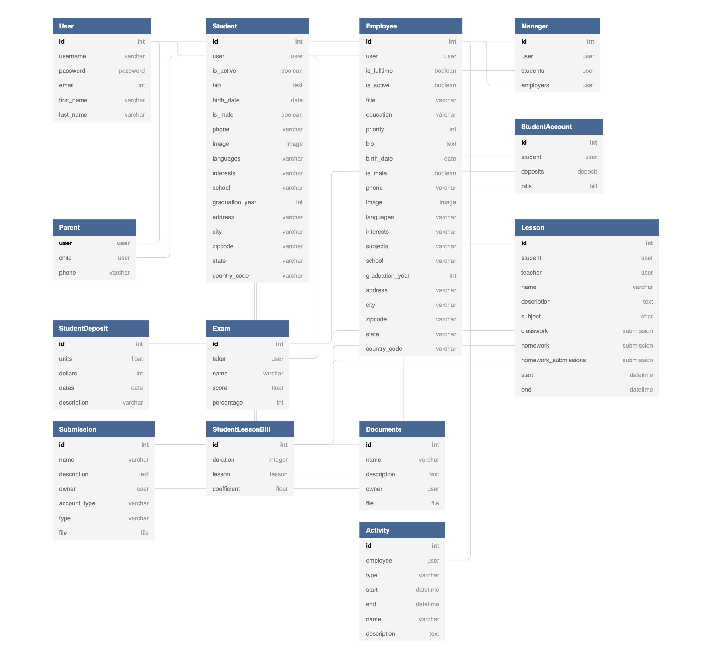

Software Engineering Experience
This summer I worked on the implementation of the internal students and teachers management system. It was a big pleasure for me to work with 4Schoolers Engineers to implement the architecture of the application. I helped to implement an internal management system for parents as well as wrote automation scripts for django framework. In addition, I could merge existing databases, implement backend infrastructure, and create UI for parents and managers. I received the following feedback from the management:
Zhijing helped us to implement an internal management system for parents. With his help, we could merge existing databases, implement backend infrastructure, and create UI for parents and managers. His strong desire to learn and exceptional quantitative skills helped him to succeed with all of the projects he was assigned. As a part of our growth plan, we will be using the software that you developed for us and suggesting improvements if needed. We hope that you will consider working with us in Summer 2022.
This portal allows employees, managers, students of 4Schoolers and their parents to have lessons and take exams. Students can have classes and submit their works. Portal uses units based payment system to help students to have classes and teachers to give them.
In the very begining of the project, we created a UML diagram:
Once we created UML Design, I was responsible for creating ORM models using Django framework. Some of the classes used are:
from django.db import models
from django.contrib.auth.models import User
from student.models import Student
class Parent(models.Model):
user = models.OneToOneField(User, on_delete=models.CASCADE)
child = models.OneToOneField(Student, on_delete=models.CASCADE)
phone = models.CharField(max_length=15,null=True, blank=True)
def __str__(self):
return self.user.get_full_name()
Or similarly I created Student Model:
Class Student(models.Model):
user = models.OneToOneField(User, on_delete=models.CASCADE)
is_active = models.BooleanField(null=True, blank=True)
bio = models.CharField(max_length=215, null=True, blank=True)
birth_date = models.DateField(null=True, blank=True)
is_male = models.BooleanField(null=True, blank=True)
phone = models.CharField(max_length=15,null=True, blank=True)
image = models.ImageField(upload_to=user_image_path, null=True, blank = True, default = 'man.png')
languages = models.CharField(max_length=215,null=True, blank=True)
interests = models.CharField(max_length=215,null=True, blank=True)
school = models.CharField(max_length=63,null=True, blank=True)
graduation_year = models.IntegerField(null=True, blank=True)
address = models.CharField(max_length=100,null=True, blank=True)
city = models.CharField(max_length=50,null=True, blank=True)
zip_code = models.CharField(max_length=50,null=True, blank=True)
state = models.CharField(max_length=50,null=True, blank=True)
country = models.CharField(max_length=50,null=True, blank=True)
def __str__(self):
return self.user.get_full_name()
Once we create ORM database and migrated all changes we started working on the implementation of the Django views. Some of the views that I implemented are below:
def validation_employee(func):
def validation(request, *args, **kwargs):
try:
employee = Employee.objects.get(user = request.user)
return func(request, *args, **kwargs)
except Exception as e:
auth.logout(request)
context = {'error': e}
return render(request, 'employee/404.jinja', context = context)
return validation
def login(request):
context = {}
if (request.user.is_authenticated):
return redirect('employee_profile')
if (request.method == 'POST'):
if '@' in request.POST['login']:
email = request.POST.get('login')
password = request.POST.get('password')
try:
user = User.objects.get(email = email)
except:
context['invalid'] = True
return render(request, 'employee/login.jinja', context)
if (user.check_password(password)):
auth.login(request, user)
return redirect('employee_profile')
else:
context['invalid'] = True
return render(request, 'employee/login.jinja', context)
else:
username = request.POST.get('login')
password = request.POST.get('password')
try:
user = User.objects.get(username = username)
except:
context['invalid'] = True
return render(request, 'employee/login.jinja', context)
if (user.check_password(password)):
auth.login(request, user)
return redirect('employee_profile')
else:
context['invalid'] = True
return render(request, 'employee/login.jinja', context)
return render(request, 'employee/login.jinja', context)
Overall, I learnt a lot of different tools and tecnhiques in software engineering, including: Python, Django, JavaScript and HTML. The whole project is available in my github.